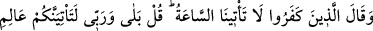

temiz ve bereketli hamd ile sana hamd ederiz.) dedi. Peygamber (s.a.) namazı bitirince
“Az önce konuşan kimdi?” diye sordu. Adam: “Benim” dedi. Bunun üzerine Efendimiz
(s.a.): “Otuz küsur meleğin bu tesbihten hâsıl olan sevabı ilk önce hangisi yazacak
diye koşuştuklarını gördüm.” buyurdu.[4]
Bu kadar sayıda bir melek topluluğunun bu sevabı yazmaya koşmaları bu tesbihat
kelimelerinin harflerinin sayısına binâendir. Çünkü her harfin söylenişi sırasında
sûretini ibkâ ve isbât eden bir ruhu vardır. Şu halde suretler ruhlarla beka kazanır. Yine
amel işleyenlerin niyetleri ve nefislerinin teveccühleri ile o amel işleyenlerin
himmetlerinin en son ulaştığı yere yükselir.
Meleklerin de bir takım mertebeleri vardır. Onlardan bazıları kudsî nurlardan ve küllî
ruhlardan yaratılmıştır. Yine bazıları sâlih amellerden ve hâlis zikirlerden yaratılmıştır.
Bazıları zikir kelimelerinin, bazıları zikir harflerinin, bazıları mükerrer olmayan
harflerin ve bazıları amellerin rükünlerinin sayısına göre yaratılmıştır. Elbette bütün
bunlar zikredenlerin istîdâdı, rûhî kuvvetleri ve yüksek himmetleri kadardır.
Mezkur hadiste bir takım amelleri hafaza melekleri ile beraber başka meleklerin de
yazdığına delil vardır. Sâlih amelleri yazma konusunda mele-i a’lâ (yüce topluluk)
kendi aralarında tartışırlar ve mertebelerine göre âdemoğullarının amelleri yazılana
kadar onları muhâfaza ederler. Bu hadîsin sırrının açıklaması, Sadreddin Konevî
(k.s.)’un Şerhu’l-Erbaîne hadîsen adlı eserindedir.[5]
3. İnkârcılar: “Kıyâmet bize gelmeyecek” dediler. De ki: “Hayır! Gaybı bilen
Rabbim hakkı için o, mutlaka size gelecektir. Göklerde ve yerde zerre miktarı bir
şey bile O’ndan gizli kalmaz. Bundan daha küçük ve daha büyüğü de şüphesiz,
apaçık kitaptadır (yazılıdır).
“İnkârcılar: “Kıyâmet bize gelmeyecek” dediler.”
Kıyâmetin hesabı çok hızlı olduğu için zamanın cüzlerinden bir cüz olan saate
benzetilerek kıyâmete “saat” denilmiştir. el-İrşâd’da der ki: “Kâfirler burada “bize”
derken sadece kendilerini yahut muasırlarını değil bütün bir beşeriyeti kasdetmişler.
Aynı şekilde kıyâmetin gelmeyeceğini söylemekle gerçekleşecek olmakla birlikte
kendilerine gelmeyeceğini değil tamamen varlığının olmadığını kasdetmişlerdir.
Kıyâmet hakkında böyle bir ifâde kullanmaları, kendilerinin kıyâmetin gelişiyle tehdit
edilmelerinden dolayıdır. Bir de gelecekte olacak işlerin var olması, özellikle beklenen
zamanın cüzleri ancak o zamanın gelmesi ve hazır olmasıyla gerçekleşir.
Keşfü’l-esrâr’da der ki: “Ba’si/yeniden diriltilmeyi inkâr edenler iki kısımdır. Bir